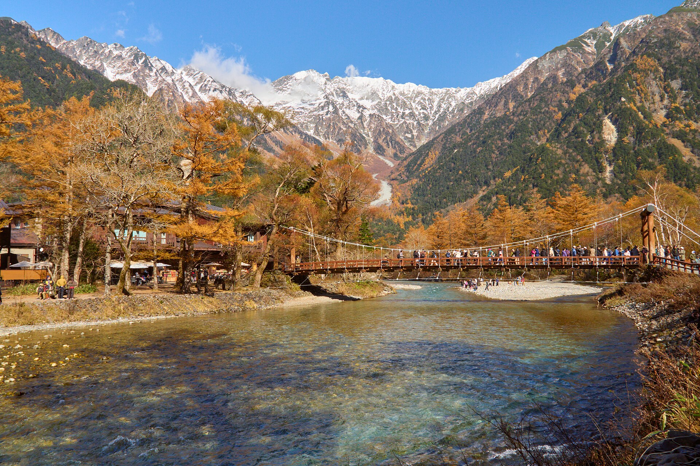

Photo: Michael Stockton / Fratello · Owner photo, linked with credit · source ↗
Kappa-bashi and the Hotaka range, Kamikochi. · Atmosphere image — not a Seiko-stated inspiration · Photo: lumoplank · CC0
Seiko has not published a colour or landscape story for this reference. The landscape above is an atmosphere image of the Japanese mountains, not a stated inspiration.
Specifications
| Official name | Seiko Champion Alpinist |
|---|---|
| Case diameter | 35.5 mm |
| Thickness | 10 mm |
| Lug-to-lug | 44 mm |
| Lug width | 19 mm |
| Case material | stainless steel |
| Crystal | domed acrylic |
| Water resistance | marked WATERPROOF (The Spring Bar); no rating |
| Crown | Unknown |
| Caseback | Stainless snap-on caseback engraved with the Alpinist mountain logo, stars and three concentric rings |
| Compass | None |
| Dial | silver/grey sector dial with anthracite outer border |
| Strap / bracelet | leather strap (no bracelet option documented) |
| Market | Japan (domestic) |
| Production period | early 1960s (Fratello estimates 'somewhere around 1963') |
| Launch price | Unknown |
Design notes
- Sector dial: brushed silver sectors, railroad minute track, anthracite border.
- Black triangle with extra lume at 12.
- Lumed dagger hands; the seconds hand has a contrasting semicircle (half-moon) counterweight/tip.
- Multi-chamfered lugs and an inset bezel.
- Four different fonts on the dial.
Unverified or disputed: year_intro, case.lug_width_mm (19 per Fratello; sister ref J13049 is 18 per W&W)